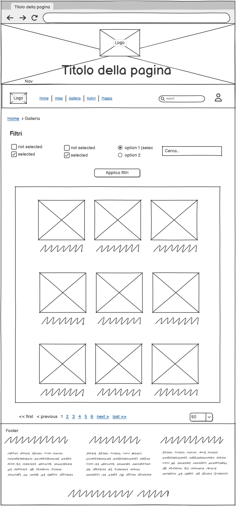
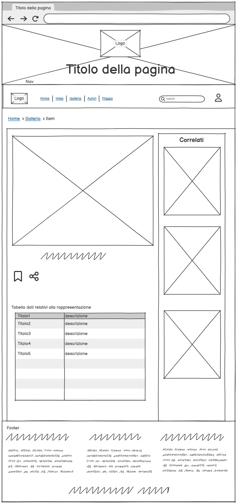

Il progetto consiste nella realizzazione di una collezione digitale dedicata alle rappresentazioni artistiche sugli Yōkai, creature del folklore giapponese. La collezione offrirà la possibilità di esplorare e ricercare singole opere attraverso un database che raccoglie tutti gli Yōkai conosciuti. Una volta selezionato il singolo item, sarà possibile visualizzarne in dettaglio tutte le informazioni relative, comprese le caratteristiche iconografiche, l’autore, il periodo storico e la tecnica utilizzata.
L’obiettivo principale è quello di documentare e conservare tutte le possibili rappresentazioni sugli Yōkai, in modo da consentire un’analisi comparativa della loro evoluzione iconografica nel tempo, attraverso epoche, stili e media differenti.
Il pubblico di riferimento comprende sia chi desidera scoprire e approfondire l’evoluzione delle rappresentazioni degli yokai nel tempo, sia studiosi e ricercatori che possono così trovare uno strumento utile per le loro indagini. In generale il pubblico di riferimento è formato da coloro che hanno un interesse relativo alla cultura nipponica.
La risorsa utilizza principalmente testo e immagini, elementi facilmente fruibili anche da dispositivi con prestazioni limitate. L’accesso è pensato in ottica multipiattaforma: grazie all’impiego di Bootstrap e delle sue componenti responsive, il sito garantisce una navigazione ottimale sia da computer fisso che da dispositivi mobile, adattandosi alle diverse esigenze del pubblico.
Utilizzo di immagini prese principalmente da WikiCommons, rispettando tutte le normative inerenti al diritto d'autore.
Esistono diverse risorse online dedicate agli Yōkai, ma la maggior parte di esse si concentra su un approccio descrittivo piuttosto che visivo:
La mappa concettuale ha lo scopo di rappresentare in forma grafica l’idea alla base del sito, evidenziando gli elementi principali e le relazioni che li collegano all’interno del contesto generale del progetto. L’elemento centrale è costituito dagli Yōkai, cuore tematico dell’intera collezione digitale, da cui si diramano diversi concetti che ne approfondiscono gli aspetti culturali e artistici. Attraverso la costruzione di questa mappa è stato possibile individuare un secondo nodo fondamentale, quello delle rappresentazioni artistiche, che insieme agli Yōkai definisce la struttura portante e l’obiettivo del progetto: documentare e valorizzare le diverse modalità con cui queste creature sono state raffigurate nel tempo.
Questo diagramma ER rappresenta la struttura logica del sito, evidenziando come le due gallerie, quella dedicata alle rappresentazioni artistiche e quella relativa ai singoli Yōkai, costituiscano il fulcro dell’intero progetto. Nel diagramma sono stati delineati i principali elementi che compongono l’architettura del sito: oltre alle gallerie, sono presenti le entità Sito, Item e Autori.
Il diagramma delle dipendenze rappresenta la struttura logico-funzionale del progetto, evidenziando i collegamenti
tra le diverse sezioni e la loro interdipendenza. Al vertice troviamo la Home, che costituisce il punto di accesso principale e il nodo da
cui si diramano tutte le altre aree del sito.
L'utente può accedere alle principali sezioni, come la galleria delle rappresentazioni, la sezione sugli autori, la mappa e l'elenco sugli Yōkai,
e la pagina di registrazione/login dell'utente.
La sezione dedicata all'elenco degli Yōkai ha un ruolo centrale, organizza le creature in 3 sottogruppi(malevoli, benevoli e neutrali)
e permette di raggiungere facilmente le rappresentazioni dello Yōkai desiderato. La Galleria rappresenta
un altro fulcro, poichè raccoglie e mostra le opere artistiche legate ai vari Yōkai, permettendo l'accesso ai singoli
Item, cioè alle schede dettagliate delle opere.
La Mappa funge da strumento di naviazione alternativa, consentendo una visualizzazione spaziale dei contesti geografici
associati agli Yōkai.
Gli Autori rappresentano un'altra componente fondamentale: questa sezione raccoglie le informazioni sugli artisti,
fornendo un elenco delle loro opere e rappresentando un altro percorso di accesso per poter raggiungere gli Item.
La sezione In evidenza ha lo scopo di valorizzare i contenuti selezionati mettendo in rislato opere o Yōkai particolarmente
interessanti(sulla base di quante volte sono stati salvati dagli utenti).
L'area di Login permette di accedere ad una pagina utente in cui si potranno salvare i contenuti preferiti
e visualizzati.
L’elemento Item rappresenta il punto di convergenza dell’intero sistema: ogni item è infatti raggiungibile da più sezioni e conterranno le informazioni relative alle rappresentazioni artistiche sugli Yōkai designate.
Queste sono le possibili categorie descrittive di un singolo item all'interno della collezione:
Home wireframe
Questo è il wireframe della Home del sito. Presenta una testata composta da un immagine con al suo interno
il logo e il nome del sito. Sotto di esso troviamo la barra di navigazione primaria dove oltre alle varie voci, troviamo
una barra di ricerca e l'icona del profilo utente.
Successivamente la pagina è divisa in 5 macro sezioni: la prima sono due immagini che indicano rispettivamente i due cataloghi principali,
quindi l'utente attraverso una navigazione di tipo contestuale può accedere facilmente alle due principali raccolte.
La seconda sezione trova oltre che una spiegazione di cosa sono gli Yokai, un carosello con alcune immagini.
La terza sezione mostra una sezione in cui l'utente può accedere alla pagina della mappa attraverso l'utilizzo di un bottone.
La quarta sezione presenta tre card, le schede in evidenza che porteranno rispettivamente a tre item differenti.
L'ultimo blocco è quello che fa riferimento all'iscrizione ad una newsletter, troviamo rispettivamente
un inserimento testo per immettere l'email e un bottone per inviare.
Infine troviamo il footer, che è suddiviso in 3 parti, dove saranno collocate
le informazioni di contatto, di info e legali.
Galleria wireframe
Questo è il wireframe della galleria della collezione, caratterizzato da una parte superiore formata da i filtri che poi si applicheranno per la scelta dei vari item attraverso un bottone. Dopodichè troviamo un blocco che racchiude la vera e propria galleria con un formato di 3x3 item per pagina. Ogni item sarà correlato di un titolo e/o descrizione. Alla fine della pagina troviamo un Pagination per poter scorrere fra le varie pagine del catalogo.
Item wireframe
Questo è il wireframe della pagina inerente all'oggetto della collezione(Item). Nella parte alta troviamo l'immagine raffiguarante la rappresentazione artistica con sotto di essa una tabella contentente tutti i dati relativi alla rappresentazione(Tiolo, Autore, Data, Tecnica ecc.). Sulla destra troviamo una sezione formata da tre card di eventuali altre rappresentazioni consigliate o affini.
Mappa wireframe
Questo wireframe rappresenta la pagina dedicata alla Mappa del Giappone. Nella parte superiore è presente un primo blocco di testo introduttivo che guida l’utente alla comprensione delle funzionalità offerte dalla pagina. A seguire si trova la mappa interattiva vera e propria, completamente cliccabile, mentre nella parte inferiore è collocata una legenda che elenca le diverse regioni rappresentate.
Per garantire un'esperienza utente fluida, accessibile e coerente, il sito è stato progettato seguendo i principi di usabilità che riguardano
architettura, aspetto visivo e coerenza stilistica.
Dal punto di vista architetturale, la struttura del sito è organizzata in sezioni, in box che raggruppano gli elementi appartenenti alla stessa categoria.
L'uso dei breadcrumb consente all'utente di orientarsi facilmente, indicando in modo visibile la posizione corrente e permettendo un rapido ritorno alle sezioni precendenti.
Inoltre, il logo presente nella barra di navigazione e nell'immagine del sito è sempre cliccabile riportando direttamente alla Home page.
L'aspetto grafico è stato curato per garantire una coerenza visiva in tutte le pagine. Utilizzata una palette di colori basata sulle tonalità del beige e del marrone,
contribuendo a mantenere un contrasto equilibrato e una lettura confortevole.
Dal punto di vista tipografico, il sito utilizza font leggibili e coerenti.
Elementi di interfaccia come button, icon e card sono facilmente riconoscibili
e sono coerenti in tutto il sito.
Implementati diversi feedback visivi per migliorare l'interazione: ad esempio, il cambio di colore al passaggio del mouse
che comunicano all'utente il compimento di un azione.
Particolare attenzione è stata posta alla navigazione su dispositivi mobile:
i contentui sono completamente responsivi, e gli elementi principali come card o pulsanti interamente cliccabili semplificando l'interazione anche su schermi ridotti.
All’interno della collezione digitale dedicata alle rappresentazioni sugli Yōkai,
sono stati integrati diversi strumenti e componenti interattivi per favorire un’esperienza
di navigazione accessibile e dinamica.
Tra i principali strumenti adottati:
Web application:
Immagini:
Codice: